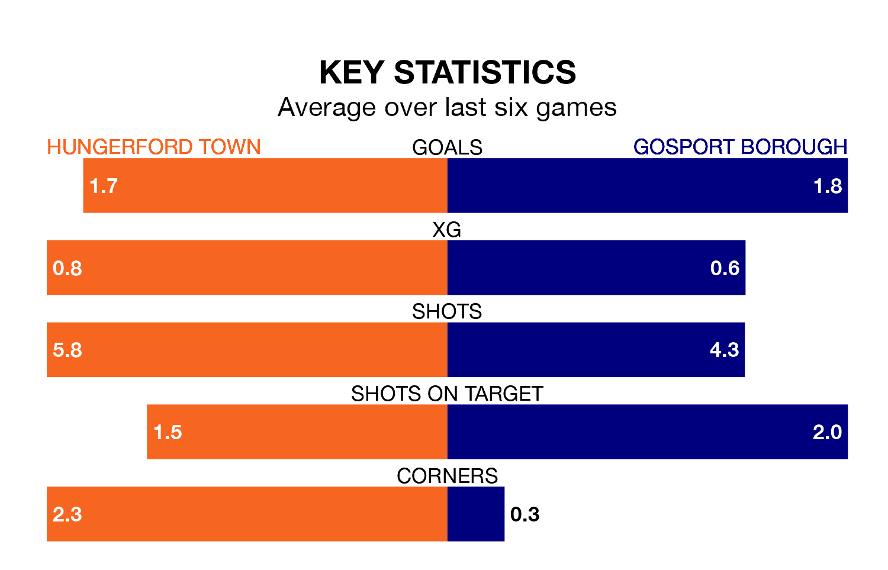

Hungerford Town face a challenge to maintain their high-scoring form at home against a tight Gosport Borough defence on Tuesday.
With 51 goals in 26 games, Hungerford are the second-highest scorers in Southern League Premier South ahead of the 7.45pm kick-off at Bulpit Lane.
They face a Gosport side who have scored 44 in 23 matches, but conceded only 21 goals, putting them top of the league's tightest defences.
Gosport are fourth in the table after 23 games, of which they have won 14 and drawn five, earning 47 points.
Hungerford are one place behind Borough in fifth, with 11 wins and nine draws putting them on 42 points.
Town are in reasonable form in Southern League Premier South, with three wins and two draws from their last six games.
And also with three wins and two draws over that period, the away side's form is identical – they have both taken 11 points from 18.
Hungerford's last match was on Saturday, a 1-0 loss against Chesham United.
Gosport drew 1-1 with Plymouth Parkway last time out, also on Saturday.
Updated: 14:53 (UTC), 16/01/24